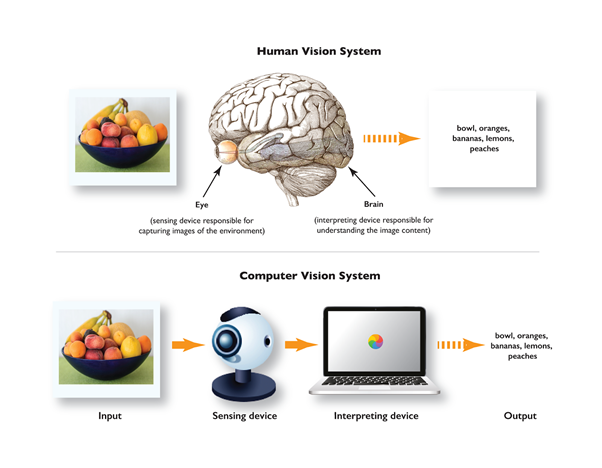
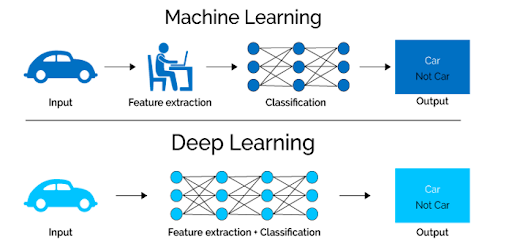
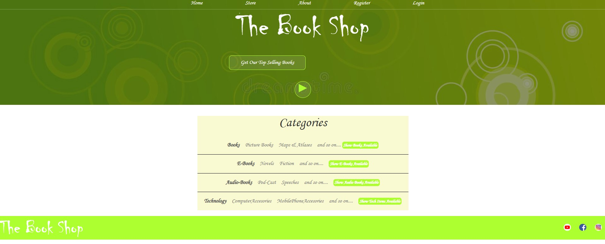

About Me
Hello, I am a experienced software testing professional with 6+ years in the IT industry and ISTQB certified, now transitioning into AI and Machine Learning field. Currently pursuing advanced degrees in Machine Learning & AI, with expertise in Python, NLP, and Computer Vision. Adept at collaborative problem-solving and eager to contribute to innovative tech solutions.
Skills
Programming:
- Python
- Numpy
- Scipy
- Pandas
- Matplotlib
- Seaborn
- TensorFlow
- Keras
- Scikit-learn
- OpenCV
- NLP
- Flask
- ReactJS
- HTML
- CSS
- JS
AI/ML Tools:
- Jupyter Notebook
- PyCharm
- Tableau
- Power BI
Databases:
- MySQL
- MongoDB
- SQL
- Oracle
Other:
- Microsoft Office
- Selenium
- Java
Projects
Computer Vision:
Computer vision is a field of artificial intelligence (AI) that enables computers and systems to interpret, understand, and make decisions based on visual data, such as images and videos. By using algorithms and models, computer vision allows machines to perform tasks like object recognition, image classification, facial recognition, and motion tracking, mimicking human visual perception. It has wide applications in areas such as autonomous vehicles, medical imaging, security, and augmented reality.
1. Camera Connectivity to Mobile :
Purpose: This script likely establishes a connection between a mobile device’s camera and Python using OpenCV.
Applications: Useful for live streaming or processing video input from mobile devices.
2. Face Detection and Tracking :
Purpose: Detects and tracks human faces in real-time using OpenCV’s detection algorithms.
Applications: Could be used in surveillance, video conferencing, or AR applications.
3. Face Emotion Recognition :
Purpose: Recognizes emotions (e.g., happy, sad) on a person’s face.
Applications: Helpful in sentiment analysis, human-computer interaction, or marketing studies.
4. Face Emotion Recognition via Mobile or IP Camera :
Purpose: Extends the emotion recognition functionality to work with video input from a mobile or IP camera.
Applications: Emotion monitoring in remote environments.
5. Face Recognition :
Purpose: Identifies and recognizes individuals based on facial features.
Applications: Authentication systems, security, or personalized user experiences.
6. Moving Object Detection :
Purpose: Detects and tracks moving objects in a video feed.
Applications: Surveillance, motion-based automation, or anomaly detection.
7. Object Tracking Based on Color :
Purpose: Tracks objects of a specific color in a video feed using HSV calibration.
Applications: Robotics, gesture recognition, or interactive games.

GitHub RepositoryMachine Learning:
Machine learning is a subset of artificial intelligence (AI) that focuses on enabling computers to learn from data and improve over time without explicit programming. It involves developing algorithms that can recognize patterns, make predictions, and make decisions based on past experiences (data). Machine learning techniques include supervised learning, unsupervised learning, and reinforcement learning. It is widely used in applications such as recommendation systems, speech recognition, image classification, and fraud detection. The key idea is that the system becomes more accurate as it is exposed to more data.Here's a brief overview of the projects in Machine Learning,
1. AI Snake Game:
An implementation of the classic Snake game, possibly enhanced with AI to control the snake's movements.
2. Decision Tree:
A project demonstrating the use of decision tree algorithms for classification or regression tasks.
3. K-Means Clustering:
An exploration of the K-Means clustering algorithm, used for unsupervised learning to partition data into distinct groups.
4. K-Nearest Neighbors (KNN):
A project showcasing the KNN algorithm, which classifies data points based on the classes of their nearest neighbors.
5. Linear Regression:
An implementation of linear regression, a fundamental algorithm for predicting a continuous dependent variable based on one or more independent variables.
6. Logistic Regression:
A project focusing on logistic regression, used for binary classification problems to model the probability of a categorical outcome.
7. Naive Bayes:
Several projects (NaiveBayes, NaiveBayes2, NaiveBayes3) exploring the Naive Bayes algorithm, a probabilistic classifier based on Bayes' theorem, often used for text classification.
8. Random Forest:
An implementation of the Random Forest algorithm, an ensemble learning method that constructs multiple decision trees for improved accuracy and robustness.

GitHub RepositoryDeep Learning:
Deep learning is a subset of machine learning that uses neural networks with many layers (hence "deep") to model complex patterns in large datasets. It is particularly effective for tasks involving unstructured data, such as images, audio, and text. Deep learning algorithms automatically extract features and representations from data, eliminating the need for manual feature engineering. It powers technologies like computer vision, natural language processing, and autonomous driving, and is known for its ability to achieve high performance in tasks such as image recognition, speech recognition, and language translation.Here's a brief overview of each project in Deep Learning,
1. Attendance System Face Recognition:
This project likely involves developing a system that uses facial recognition to mark attendance, utilizing deep learning techniques to identify and verify individuals.
2. COVID-19 Detection from X-Ray Images:
This project aims to detect COVID-19 infections by analyzing chest X-ray images, employing convolutional neural networks (CNNs) to identify patterns indicative of the virus.
3. Character Recognition:
This project focuses on recognizing handwritten or printed characters, possibly using models like CNNs or recurrent neural networks (RNNs) to interpret textual data.
4. Diabetes Prediction:
This project involves predicting the likelihood of diabetes in individuals based on various health metrics, utilizing deep learning models to analyze medical data and identify risk factors.
5. Drowsiness Detection:
This project aims to detect driver drowsiness in real-time, potentially using facial landmarks and eye state analysis to prevent accidents caused by fatigue.
6. Hand Gesture Recognition:
This project focuses on recognizing hand gestures, which can be applied in human-computer interaction, sign language interpretation, or virtual reality environments.
7. Image Recognition:
This project involves classifying and identifying objects within images, utilizing deep learning models to achieve accurate image analysis.
8. Label Reading using OCR:
This project aims to read and interpret text from images of labels using Optical Character Recognition (OCR) techniques, enabling automated data extraction from images.
9. Leaf Disease Prediction:
This project focuses on identifying diseases in plant leaves by analyzing images, assisting in early detection and management of plant health issues.
10. License Plate Recognition:
This project involves detecting and recognizing vehicle license plates from images or video streams, useful in traffic monitoring and automated toll systems.
11. Object Recognition Using Pre-Trained Model:
This project utilizes pre-trained deep learning models to recognize and classify objects within images, leveraging transfer learning for efficient model development.
12. Road Sign Recognition:
This project focuses on identifying and classifying road signs from images, which is essential for autonomous driving systems and traffic management.
13. Vehicle Detection and Tracking:
This project involves detecting and tracking vehicles in video streams, applicable in surveillance, traffic analysis, and autonomous vehicle navigation.
These projects demonstrate practical applications of deep learning across various domains, showcasing the versatility and impact of neural network-based approaches in solving real-world problems.

GitHub RepositoryNLP:
Natural Language Processing (NLP) is a field of artificial intelligence (AI) that focuses on the interaction between computers and human language. It involves the development of algorithms and models to enable machines to understand, interpret, and generate human language in a way that is meaningful. NLP tasks include language translation, sentiment analysis, speech recognition, chatbots, and text summarization. By processing and analyzing large amounts of textual data, NLP helps machines perform tasks that require understanding of context, syntax, semantics, and intent in human communication.
1. Text Classification:
Assigning predefined categories to text data, such as spam detection or sentiment analysis.
2. Named Entity Recognition (NER):
Identifying and classifying entities like names, dates, and locations within text.
3. Sentiment Analysis:
Determining the sentiment expressed in a piece of text, whether positive, negative, or neutral.
4. Machine Translation:
Automatically translating text from one language to another.
5. Text Summarization:
Generating concise summaries of longer text documents.
6. Part-of-Speech Tagging:
Labeling words in a sentence with their respective parts of speech, such as nouns, verbs, adjectives, etc.
7. Language Modeling:
Developing models that can predict the next word in a sequence, useful for various applications like text generation.
8. Chatbots and Conversational Agents:
Creating systems capable of engaging in human-like dialogue, such as Google's Meena chatbot, which can engage in near-human conversations.

GitHub RepositoryThe Book Shop – Online Book Store:
Front-end web development involves creating the visual and interactive parts of a website that users directly interact with. It primarily uses HTML (HyperText Markup Language) to structure the content, CSS (Cascading Style Sheets) to style and layout the webpage, and JavaScript to add interactivity and dynamic behavior.
HTML defines the structure of the web page, such as headings, paragraphs, images, and links.
CSS is used to style the HTML elements, controlling their appearance, such as colors, fonts, spacing, and positioning.
JavaScript enables dynamic content and interactivity, allowing for features like form validation, animations, and real-time updates without reloading the page.
Together, these technologies allow developers to create responsive, engaging, and functional websites and web applications.
Designed and developed an online bookstore with features like user registration, login, and book purchasing.

GitHub Repository
Contact
Feel free to reach out via email at anushameena22@gmail.com.